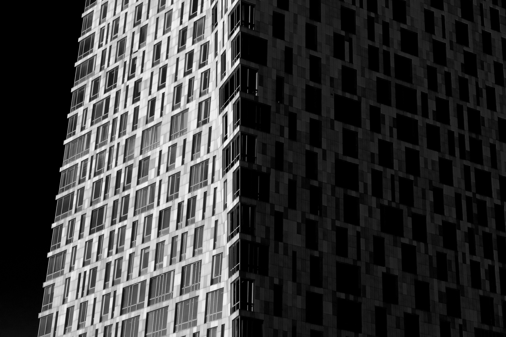
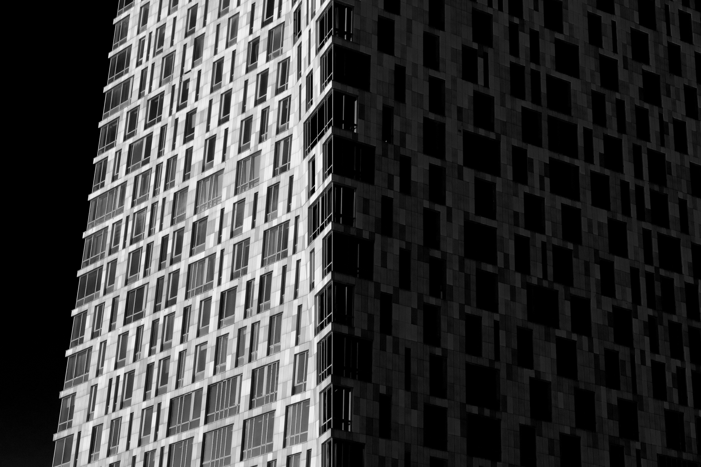

Мои работы
Солнечные мгновения
Часто, находясь дома я замечаю маленькие напоминания, оставленные солнцем - яркий желтый свет на двери комнаты или интересно подсвеченные следы на тарелке салата. Я люблю запечатлевать эти моменты в фотографиях. Солнце, лаская светом и добротой, напоминает о том, что нужно ценить каждый день своей жизни и что в будущем меня ждут счастливые моменты.


Современная столица
Люблю гулять в Москве. Для меня это город инноваций и технологий. Мир сейчас быстро меняется и это отражается во всем, в том числе и в облике новых построек. Кто-то любит современную архитектуру, кто-то нет. Но для меня она является отражением прогресса.


 


В четырех стенах
Во время первой волны короновируса я оказалась заперта в своей комнате. Конечно, жизнь не остановилась и мне, как и всем выпускникам нужно было продолжать готовиться к экзаменам. Заниматься в условиях изоляции было безусловно сложнее, не хватало того общения, которое было в школе. Именно это подтолкнуло меня снимать как можно больше, чтобы дать волю своим эмоциям и чувствам.